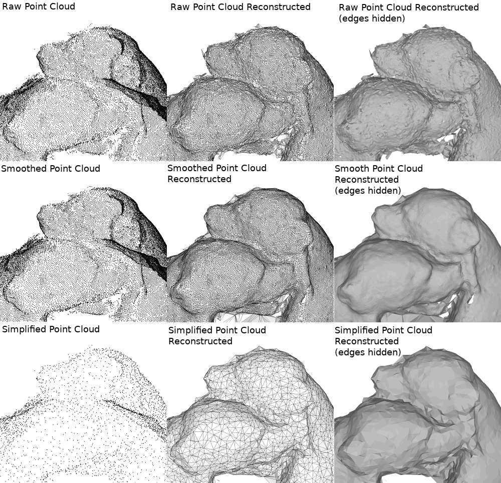
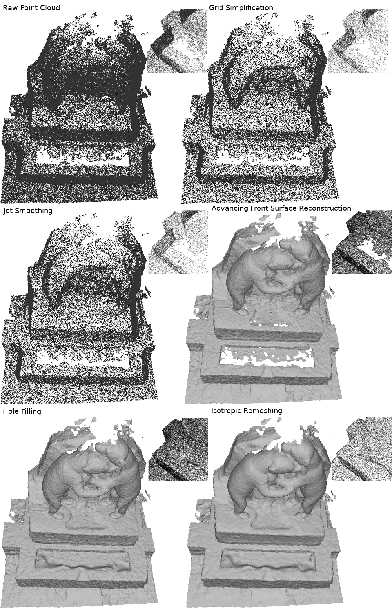

- Author
- Simon Giraudot
点云的表面重建是几何处理中的一个核心课题 [cgal:btsag-asosr-16。这是一个病态问题：对于单个点云，存在无数个可以近似它的表面，而点云本身并不能定义一个确定的表面。因此，用户需要设定额外的假设和约束条件，重建可以通过多种不同的方式实现。本教程将指导您如何使用CGAL中的不同算法来有效地进行表面重建。]
我应该使用哪种算法？
CGAL提供了三种不同的表面重建算法：
由于重建是一个病态问题，必须通过先验知识来规范化。不同的先验会导致不同的算法，选择这些方法中的哪一个取决于这些先验条件。例如，泊松重建总是生成闭合形状（体积边界），需要法向量信息，但不会精确插值输入点（输出表面不会严格通过输入点）。下表列出了输入和输出的不同特性，以帮助用户选择最适合每个问题的方法：
| 泊松重建 | 推进前沿重建 | 尺度空间重建 |
| 是否需要法向量？ | 是 | 否 | 否 |
| 是否处理噪声？ | 是 | 通过预处理 | 是 |
| 是否处理变化的采样密度？ | 是 | 是 | 通过预处理 |
| 输入点是否严格位于表面上？ | 否 | 是 | 是 |
| 输出是否总是闭合的？ | 是 | 否 | 否 |
| 输出是否总是平滑的？ | 是 | 否 | 否 |
| 输出是否总是流形？ | 是 | 是 | 可选 |
| 输出是否总是可定向的？ | 是 | 是 | 可选 |
关于这些不同方法的更多信息可以在它们各自的手册页面和 重建 章节中找到。
流程概述
本教程旨在提供CGAL在处理点云和表面重建方面的更全面视角。下图展示了使用CGAL工具进行重建的常见步骤概述（非详尽）。
接下来我们将详细介绍这些步骤。
读取输入
CGAL中的重建算法以容器上的迭代器范围作为输入，并使用属性映射来访问点（以及在需要时访问法向量）。点通常以纯文本格式存储（称为'XYZ'格式），其中每个点由换行符分隔，每个坐标由空格分隔。其他可用格式包括'OFF'、'PLY'和'LAS'。CGAL提供了读取这些格式的函数：
read_XYZ()read_OFF()read_PLY()read_PLY_with_properties() 用于读取额外的PLY属性read_LAS()read_LAS_with_properties() 用于读取额外的LAS属性
CGAL还提供了专门的容器 CGAL::Point_set_3 来处理带有额外属性（如法向量）的点集。在这种情况下，属性映射的处理变得非常简单，如下面章节所示。该结构还支持流操作符，可以读取上述任何格式的点集。使用这种方法可以大大减少代码量，如下例所示：
Point_set points;
std::string fname = argc==1?CGAL::data_file_path("points_3/kitten.xyz") : argv[1];
if (argc < 2)
{
std::cerr << "Usage: " << argv[0] << " [input.xyz/off/ply/las]" << std::endl;
std::cerr <<"Running " << argv[0] << " data/kitten.xyz -1\n";
}
std::ifstream stream (fname, std::ios_base::binary);
if (!stream)
{
std::cerr << "Error: cannot read file " << fname << std::endl;
return EXIT_FAILURE;
}
stream >> points;
std::cout << "Read " << points.size () << " point(s)" << std::endl;
if (points.empty())
return EXIT_FAILURE;
预处理
由于重建算法有一些特定要求，而点云并不总是满足这些要求，因此可能需要进行一些预处理才能获得最佳结果。
注意，这个预处理步骤是可选的：当输入点云没有缺陷时，可以直接对其进行重建，无需任何预处理。

离群点去除
某些采集技术会产生远离表面的点。这些点通常被称为"离群点"，对重建没有意义。在包含离群点的点云上使用CGAL重建算法会产生严重扭曲的输出，因此强烈建议在执行重建之前过滤这些离群点。
typename Point_set::iterator rout_it = CGAL::remove_outliers<CGAL::Sequential_tag>
(points,
24,
points.parameters().threshold_percent (5.0));
points.remove(rout_it, points.end());
std::cout << points.number_of_removed_points()
<< " point(s) are outliers." << std::endl;
points.collect_garbage();
简化
某些激光扫描仪生成的点具有很大的采样密度变化。通常，扫描线上的点采样非常密集，但两条扫描线之间的间隙较大，这导致点云过于庞大且采样密度变化很大。这种类型的输入点云可能会在使用那些通常只能处理小幅采样密度变化的算法时产生不完美的输出。
CGAL提供了几种简化算法。除了减少输入点云的大小从而减少计算时间外，其中一些还可以帮助使输入更加均匀。grid_simplify_point_set()函数就是这样的例子，它定义了一个用户指定大小的网格，并在每个被占用的单元格中保留一个点。
double spacing = CGAL::compute_average_spacing<CGAL::Sequential_tag> (points, 6);
points.remove(gsim_it, points.end());
std::cout << points.number_of_removed_points()
<< " point(s) removed after simplification." << std::endl;
points.collect_garbage();
PointRange::iterator grid_simplify_point_set(PointRange &points, double epsilon, const NamedParameters &np=parameters::default_values())
平滑
尽管"泊松"或"尺度空间"重建在内部处理噪声，但用户可能想要对平滑步骤有更精确的控制。例如，略带噪声的点云可以通过一些可靠的平滑算法进行处理，然后通过"推进前沿"方法重建，这种方法提供了相关的特性（带边界的定向网格）。
CGAL提供了两个函数来对噪声点云进行良好的近似平滑（即不会降低曲率等特性）：
这些函数直接修改容器：
CGAL::jet_smooth_point_set<CGAL::Sequential_tag> (points, 24);
法向量估计与定向
泊松表面重建 需要带有定向法向量的点。要将算法应用于原始点云，必须首先估计法向量，例如使用以下两个函数之一：
PCA方法更快，但在存在高曲率的情况下，喷射法（jet）更准确。这些函数只估计法向量的方向，而不是它们的定向（向量的方向可能在局部不一致）。要正确定向法向量，可以使用以下函数：
第一个函数使用最小生成树（minimum spanning tree）在逐渐扩大的邻域中一致地传播法向量的定向。对于具有许多尖锐特征和遮挡的数据（例如在机载激光雷达数据中很常见），第二种算法可能会产生更好的结果：它利用按扫描线排序的点云来估计每个点的视线方向，从而相应地定向法向量。
注意，如果输入的法向量方向不一致，这些函数也可以直接用于输入的法向量。
CGAL::jet_estimate_normals<CGAL::Sequential_tag>
(points, 24);
typename Point_set::iterator unoriented_points_begin =
points.remove (unoriented_points_begin, points.end());
PointRange::iterator mst_orient_normals(PointRange &points, unsigned int k, const NamedParameters &np=parameters::default_values())
重建
泊松重建
泊松重建的原理是计算一个隐式函数，其梯度与输入的法向量场匹配：这个指示函数在推断形状的内部和外部具有相反的符号（因此需要闭合形状）。这种方法需要法向量，并产生平滑的闭合表面。如果期望表面精确插值输入点，这种方法就不合适。相反，如果目标是用平滑表面近似带噪声的点云，它的表现会很好。
(points.begin(), points.end(),
points.point_map(), points.normal_map(),
output_mesh, spacing);
bool poisson_surface_reconstruction_delaunay(PointInputIterator begin, PointInputIterator end, PointMap point_map, NormalMap normal_map, PolygonMesh &output_mesh, double spacing, double sm_angle=20.0, double sm_radius=30.0, double sm_distance=0.375, Tag tag=Tag())
推进前沿重建
推进前沿是一种基于Delaunay三角剖分的方法，它对输入点的子集进行插值。它生成点索引的三元组来描述重建的三角形面片：它使用优先队列按顺序选择最可能成为表面一部分的Delaunay面片，基于大小准则（倾向于选择小面片）和角度准则（倾向于平滑性）。它的主要优点是可以生成带边界的定向流形表面：与泊松重建不同，它不需要法向量，也不局限于重建闭合形状。但是，如果点云有噪声，则需要预处理。
推进前沿 包提供了几种构造函数的方法。这里是一个简单的例子：
typedef std::array<std::size_t, 3> Facet;
std::vector<Facet> facets;
points.points().end(),
std::back_inserter(facets));
std::cout << facets.size ()
<< " facet(s) generated by reconstruction." << std::endl;
IndicesOutputIterator advancing_front_surface_reconstruction(PointInputIterator b, PointInputIterator e, IndicesOutputIterator out, double radius_ratio_bound=5, double beta=0.52)
尺度空间重建
尺度空间重建的目标是生成一个插值输入点的表面（插值器），同时对噪声具有一定的鲁棒性。具体来说，它首先对输入点集多次应用平滑滤波器（如喷射平滑）以产生尺度空间；然后，对最平滑的尺度进行网格化（例如使用推进前沿网格生成器）；最后，将平滑点之间的连接关系传播到原始输入点集。如果输入点云有噪声但用户仍然希望表面精确通过这些点，这种方法是正确的选择。
(points.points().begin(), points.points().end());
输出和后处理
这些方法每一个都以不同的方式生成三角网格。如果输出网格存在缺陷，如孔洞或自相交，CGAL在 多边形网格处理 包中提供了几种算法来进行后处理（孔洞填充、重新网格化等）。
我们在这里不详细讨论这些函数，因为有许多后处理的可能性，其相关性强烈依赖于用户对输出网格的期望。
网格（经过后处理或未经后处理）可以轻松保存为PLY格式（这里使用二进制变体）：
std::ofstream f ("out_poisson.ply", std::ios_base::binary);
f.close ();
Mode set_binary_mode(std::ios &s)
bool write_PLY(std::ostream &os, const Surface_mesh< P > &sm, const std::string &comments, const NamedParameters &np=parameters::default_values())
多边形汤（polygon soup）也可以通过遍历点和面保存为OFF格式：
std::ofstream f ("out_sp.off");
f << "OFF" << std::endl << points.size () << " "
<< reconstruct.number_of_facets() << " 0" << std::endl;
for (Point_set::Index idx : points)
f << points.point (idx) << std::endl;
for (
const auto& facet :
CGAL::make_range (reconstruct.facets_begin(), reconstruct.facets_end()))
f << "3 "<< facet[0] << " " << facet[1] << " " << facet[2] << std::endl;
f.close ();
Iterator_range< T > make_range(const T &b, const T &e)
最后，如果多边形汤可以转换为多边形网格，也可以使用流操作符直接保存为OFF格式：
std::vector<Point_3> vertices;
vertices.reserve (points.size());
std::copy (points.points().begin(), points.points().end(), std::back_inserter (vertices));
std::ofstream f ("out_af.off");
f << output_mesh;
f.close ();
void polygon_soup_to_polygon_mesh(const PointRange &points, const PolygonRange &polygons, PolygonMesh &out, const NamedParameters_PS &np_ps=parameters::default_values(), const NamedParameters_PM &np_pm=parameters::default_values())
完整代码示例
本教程中使用的所有代码片段可以组合成一个完整的算法流程（需要使用正确的 _includes_）。我们提供了一个完整的代码示例，实现了本教程中描述的所有步骤。用户可以在运行时通过第二个参数选择重建方法。
#include <CGAL/Exact_predicates_inexact_constructions_kernel.h>
#include <CGAL/Point_set_3.h>
#include <CGAL/Point_set_3/IO.h>
#include <CGAL/remove_outliers.h>
#include <CGAL/grid_simplify_point_set.h>
#include <CGAL/jet_smooth_point_set.h>
#include <CGAL/jet_estimate_normals.h>
#include <CGAL/mst_orient_normals.h>
#include <CGAL/poisson_surface_reconstruction.h>
#include <CGAL/Advancing_front_surface_reconstruction.h>
#include <CGAL/Scale_space_surface_reconstruction_3.h>
#include <CGAL/Scale_space_reconstruction_3/Jet_smoother.h>
#include <CGAL/Scale_space_reconstruction_3/Advancing_front_mesher.h>
#include <CGAL/Surface_mesh.h>
#include <CGAL/Polygon_mesh_processing/polygon_soup_to_polygon_mesh.h>
#include <cstdlib>
#include <vector>
#include <fstream>
typedef Kernel::FT FT;
int main(int argc, char*argv[])
{
Point_set points;
std::string fname = argc==1?CGAL::data_file_path("points_3/kitten.xyz") : argv[1];
if (argc < 2)
{
std::cerr << "Usage: " << argv[0] << " [input.xyz/off/ply/las]" << std::endl;
std::cerr <<"Running " << argv[0] << " data/kitten.xyz -1\n";
}
std::ifstream stream (fname, std::ios_base::binary);
if (!stream)
{
std::cerr << "Error: cannot read file " << fname << std::endl;
return EXIT_FAILURE;
}
stream >> points;
std::cout << "Read " << points.size () << " point(s)" << std::endl;
if (points.empty())
return EXIT_FAILURE;
typename Point_set::iterator rout_it = CGAL::remove_outliers<CGAL::Sequential_tag>
(points,
24,
points.parameters().threshold_percent (5.0));
points.remove(rout_it, points.end());
std::cout << points.number_of_removed_points()
<< " point(s) are outliers." << std::endl;
points.collect_garbage();
double spacing = CGAL::compute_average_spacing<CGAL::Sequential_tag> (points, 6);
points.remove(gsim_it, points.end());
std::cout << points.number_of_removed_points()
<< " point(s) removed after simplification." << std::endl;
points.collect_garbage();
CGAL::jet_smooth_point_set<CGAL::Sequential_tag> (points, 24);
int reconstruction_choice
= argc==1? -1 : (argc < 3 ? 0 : atoi(argv[2]));
if (reconstruction_choice == 0 || reconstruction_choice==-1)
{
CGAL::jet_estimate_normals<CGAL::Sequential_tag>
(points, 24);
typename Point_set::iterator unoriented_points_begin =
points.remove (unoriented_points_begin, points.end());
(points.begin(), points.end(),
points.point_map(), points.normal_map(),
output_mesh, spacing);
std::ofstream f ("out_poisson.ply", std::ios_base::binary);
f.close ();
}
if (reconstruction_choice == 1 || reconstruction_choice==-1)
{
typedef std::array<std::size_t, 3> Facet;
std::vector<Facet> facets;
points.points().end(),
std::back_inserter(facets));
std::cout << facets.size ()
<< " facet(s) generated by reconstruction." << std::endl;
std::vector<Point_3> vertices;
vertices.reserve (points.size());
std::copy (points.points().begin(), points.points().end(), std::back_inserter (vertices));
std::ofstream f ("out_af.off");
f << output_mesh;
f.close ();
}
if (reconstruction_choice == 2 || reconstruction_choice==-1)
{
(points.points().begin(), points.points().end());
std::ofstream f ("out_sp.off");
f << "OFF" << std::endl << points.size () << " "
<< reconstruct.number_of_facets() << " 0" << std::endl;
for (Point_set::Index idx : points)
f << points.point (idx) << std::endl;
for (
const auto& facet :
CGAL::make_range (reconstruct.facets_begin(), reconstruct.facets_end()))
f << "3 "<< facet[0] << " " << facet[1] << " " << facet[2] << std::endl;
f.close ();
}
else
{
std::cerr << "Error: invalid reconstruction id: " << reconstruction_choice << std::endl;
return EXIT_FAILURE;
}
return EXIT_SUCCESS;
}
完整流程图示
以下图示展示了应用于一个熊雕像（由 EPFL Computer Graphics and Geometry Laboratory 提供 [cgal:e-esmr）的完整重建流程。同时还应用了两个网格处理算法（孔洞填充和各向同性重网格化）（更多信息请参考] 多边形网格处理 章节）。
